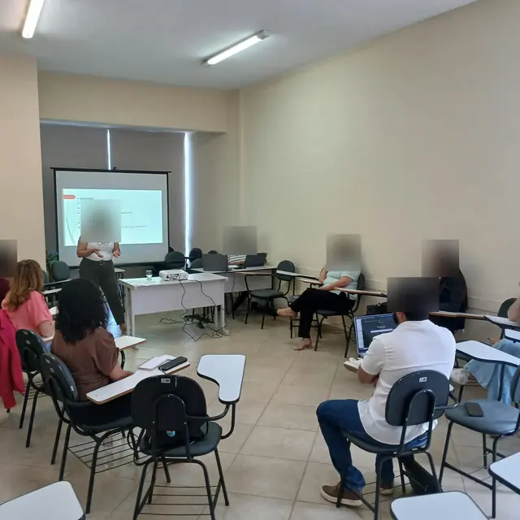

Status do projeto de extensão
O Conexão Universitária é o projeto de extensão do NAE da UEMG Unidade Guanhães. Esta página registra, fase por fase, o que já foi feito, o que está em andamento e o que vem a seguir, desde o início do projeto.
Comunidade Acadêmica Local
Objetivo: implantar um site para que os estudantes da UEMG Guanhães tenham acesso facilitado à informação acadêmica, em linguagem clara, pelo celular e a qualquer hora.
Comunidade Externa
Parceria com a Secretaria Municipal de Educação de Guanhães/MG
O projeto ultrapassa os muros da universidade. O conhecimento produzido na UEMG passa a servir diretamente ao Município, na construção de políticas públicas voltadas para o TEA e as neurodivergências.
Objetivo: parceria com a Secretaria Municipal de Educação de Guanhães/MG para a implementação de políticas públicas voltadas para o TEA (Transtorno do Espectro Autista) e as neurodivergências.
Por que uma nova lei: a lei municipal atual exige o centro de referência somente para o TEA. A nova lei vem para ampliar essa abrangência, incluindo as demais neurodivergências.
Centro de referência: já está sendo criado, e o projeto vai colaborar com ele mesmo que a nova lei não seja aprovada.
Divulgação do Vestibular 2027
Objetivo: divulgar o Vestibular 2027 da UEMG e os cursos da Unidade Guanhães.
Etapas executadas
Da mais recente para a mais antiga.
-
Wi-Fi da Unidade e nova página inicial
Página própria com as redes e a senha nova da internet do campus. A página inicial passa a ter um quadro fixo de boas-vindas, a busca em destaque e um painel só com avisos, em que cada aviso novo fica em primeiro por 10 dias.
-
Intercâmbio PILA 2027-1
Resumo do edital em linguagem clara, com as vagas para Direito e Engenharia Civil, documentos e cronograma.
-
Assistência estudantil, saúde mental e busca por professor
Página da bolsa PROPCTs para povos e comunidades tradicionais, divulgação do webinário V Conecta Mente e busca que sugere o nome do professor enquanto se digita.
-
28º Seminário de Pesquisa e Extensão
Página com todos os prazos e a ordem certa de inscrição, aviso sobre o Currículo Lattes e a prorrogação da submissão de trabalhos.
-
Início: o site no ar para os estudantes
Início oficial do site para a comunidade acadêmica da UEMG Guanhães, com o conteúdo preparado e conferido durante a fase de testes.
-
Declaração de uso de inteligência artificial
Modelo de declaração para o estudante anexar aos trabalhos acadêmicos, válido para os dois cursos.
-
Início do extensionista bolsista
Gabriel Victor Lopes Sathler Henriques, extensionista bolsista, começa a atuar no projeto, no desenvolvimento, na atualização e na divulgação do site, sob orientação do coordenador.
-
Auxílios, pagamentos e a quem recorrer
Roteiro de quem procurar para cada assunto e o passo a passo de quando o auxílio não é pago, com modelo de e-mail para copiar. A busca passa a tolerar erros de digitação.
-
Os Projetos Pedagógicos em linguagem clara
Matriz curricular com as ementas e bibliografias das disciplinas e as tabelas de atividades complementares transcritas dos dois cursos.
-
Seção Meu curso e gerador de requerimentos
Informações de estágio, TCC e secretaria reunidas, menu organizado por assunto e requerimentos prontos para imprimir e entregar.
-
Sistemas acadêmicos e ferramentas do estudante
Guias do AVA Moodle e do Lyceum, busca interna, apoio psicológico, calculadora de média e faltas, planner, cronômetro de estudos e mural de avisos. O site passa a funcionar sem internet depois da primeira visita.
-
Identidade visual e endereço próprio
Marca oficial do NAE, endereço naeguanhaes.github.io e instalação na tela do celular como aplicativo.
-
Testes iniciais para publicação do site
Primeira versão em teste, com o guia do e-mail institucional, os horários de 2026.2, o mapa do campus e o contato do NAE, além de cartaz com QR code para divulgação nas salas.
Próximas entregas da Fase 1
- Guia "Comece por aqui" para quem acaba de entrar na UEMG. Está pronto e será publicado com a chegada da próxima turma.
- Arquivo dos horários dos semestres encerrados, quando houver mais de um semestre para consultar.
Como o site se mantém confiável
Cada informação é conferida na fonte oficial. A cada atualização, inspeções automáticas verificam links, acessibilidade e dados, e impedem a publicação se encontrarem erro. O site não usa cookies e conta as visitas sem identificar quem acessa.
Etapas executadas
-
Primeira reunião da Comissão Intersetorial
Primeira reunião da Comissão Intersetorial de Proteção dos Direitos da Pessoa com TEA, instituída pelo Decreto nº 5.244/2026, na Secretaria Municipal de Educação de Guanhães. O coordenador do projeto integra a Comissão como conselheiro técnico indicado pela UEMG. Foram apresentadas a composição e as atribuições da Comissão e definidos os primeiros encaminhamentos: o levantamento da demanda no município, os fluxos de atendimento entre educação, saúde e assistência social e a organização do centro de referência.

-
Termo de compromisso assinado
Assinatura do termo de compromisso da parceria com a Secretaria Municipal de Educação de Guanhães/MG, com o cronograma dos quatro produtos abaixo.
-
Envio do projeto à Secretaria
O projeto da parceria é enviado à Secretaria Municipal de Educação de Guanhães.
-
Início das tratativas com a Secretaria
Primeiros contatos com a Secretaria Municipal de Educação para a parceria voltada às políticas públicas para o TEA e as neurodivergências.
Quem a nova lei pode alcançar
A intenção do projeto é alcançar as crianças de até 14 anos de Guanhães. Os números abaixo mostram uma parte desse público, a faixa de 4 e 5 anos, e dão a primeira medida de quantas crianças estarão ao alcance da nova lei e do centro de referência, que já está sendo criado. Hoje a lei exige o centro somente para o TEA; a nova lei amplia a abrangência para as demais neurodivergências.
Matrículas na pré-escola
Ou seja, cerca de 88% das crianças dessa idade estão na pré-escola, e 104 ainda estão fora dela.
Fonte: CGI Demográfico/RIPSA e CGIAE/SVSA/Ministério da Saúde; INEP (2025).
Quantas dessas crianças estão no espectro autista ou têm outra neurodivergência? Ainda não se sabe. Guanhães ainda não tem um centro de referência em funcionamento para o diagnóstico e o acompanhamento, e é justamente por isso que esse número não existe. O centro, que já está sendo criado, é o que vai permitir conhecer e acompanhar esse público.
Produtos e prazos
O que o projeto entrega ao Município, conforme o termo de compromisso.
| Produto | Descrição | Prazo | Situação |
|---|---|---|---|
| P1 | Dossiê normativo: legislação municipal vigente, processo legislativo, legislação federal e estadual aplicável e análise crítica da minuta elaborada pela Secretaria. | 16/10/2026 | A entregar |
| P2 | Relatório de pesquisa comparada, com identificação de boas práticas e de dispositivos replicáveis. | 30/10/2026 | A entregar |
| P3 | Minuta da proposta legislativa, com justificativa e análise de compatibilidade normativa. | 04/12/2026 | A entregar |
| P4 | Versão final revisada e validada, entregue formalmente ao Município. | 18/12/2026 | A entregar |
Etapas executadas
Da mais recente para a mais antiga.
Equipe do projeto
Prof. Jonatan Barbosa Silva
Coordenador do Núcleo de Apoio ao Estudante da UEMG Unidade Guanhães. Responde pela concepção do projeto, pela orientação dos extensionistas e pela validação de tudo o que é publicado e entregue.
Gabriel Victor Lopes Sathler Henriques
Direito · 4º período
No projeto desde 17 de agosto de 2026. Atua no desenvolvimento, na atualização e na divulgação das ações, sob orientação do coordenador.
Nove estudantes no projeto desde 1º de outubro de 2026
Integram a equipe como voluntários e atuam nas ações do projeto sob orientação do coordenador.
- Alana Júlia Antunes SantosDireito · 7º período
- Geovana Barbosa SoaresEngenharia Civil · 2º período
- Alana Cristina de Oliveira MoraisDireito · 7º período
- Kariny de Amorim SilvaDireito · 7º período
- Rian Victor Felício da SilvaDireito · 7º período
- Kassila Nunes UtschDireito · 10º período
- Nicole Izabele Campos BarbosaDireito · 10º período
- Arthur Alves AguiarDireito · 4º período
- Welberth Kelven Araujo DiasEngenharia Civil · 2º período
Página atualizada em 09 de outubro de 2026.